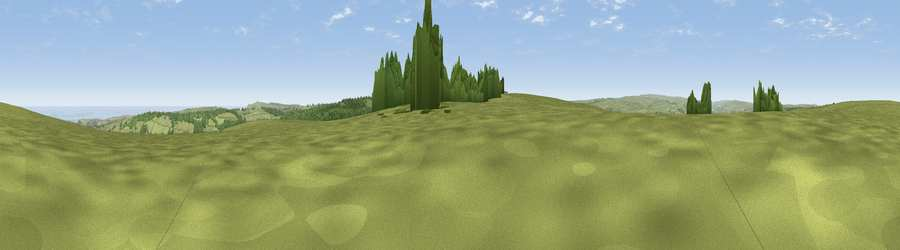

Pen Howe
#6951 in England · top 20% of its area beats it · near EskdalesideWhere it is
The exact computed spot (NZ 85590 03874). Click the marker for map links.
The view, rendered

A 360° render of this exact spot computed from the terrain model, tree cover and land cover — summer colours, afternoon light, calibrated against photographs of famous viewpoints. Real trees, hedges and buildings will differ in detail.
The panorama
Grey silhouette: terrain skyline in each direction (720 bearings, Earth curvature and refraction included). Dashed green: skyline with trees (+15 m) and buildings (+8 m) as obstacles. Blue strip: how far the ground is visible on each bearing.
Where the view opens
Wedge length = distance to the farthest visible ground on that bearing (vegetation-aware). Rings at 10, 25 and 50 km.
What fills the view
70% grassland · 17% woodland · 10% water · 1% cropland
Angular shares of the visible panorama (visual magnitude), not map area. Landscape diversity 0.37 (0–1 Shannon).
Key numbers
More beautiful places nearby
The staircase of upgrades: each row has a higher view potential than everything closer. Driving times are estimates from straight-line distance, calibrated against real road routing — check an actual route before setting out.
| Place | Direction | Drive | Score |
|---|---|---|---|
| Flat Howe | N · 1 km | ~3 min | 76.4 |
| Viewpoint near Eskdaleside | NNW · 1 km | ~4 min | 78.4 |
| Viewpoint near Eskdaleside | N · 2 km | ~5 min | 80.7 |
| Viewpoint near Fylingthorpe | E · 7 km | ~15 min | 81.1 |
| Viewpoint near Fylingthorpe | ENE · 8 km | ~17 min | 82.3 |
| Viewpoint near Robin Hood's Bay | ENE · 9 km | ~18 min | 83.3 |
| Viewpoint near Ravenscar | E · 11 km | ~20 min | 90.0 |
| Viewpoint near Easington | NW · 20 km | ~33 min | 90.2 |
54.42310, -0.68237 · source: osm peak · position refined by local search. Computed location — check access rights before visiting.